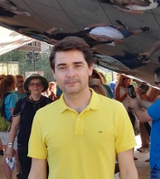
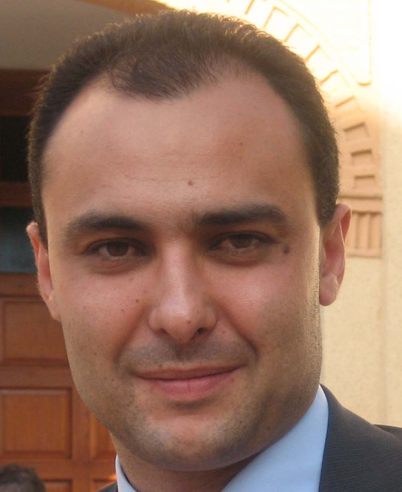

Full Members

Manuel E. Acacio is a Professor of computer architecture and technology at the University of Murcia, Spain. He joined the Computer Engineering Department (DiTEC) in 1998, after I received the MS degree in computer science. He started as a Teaching Assistant. At the same time, he began his work on his PhD thesis. In the summer of 2002, he worked as a summer intern at IBM TJ Watson Research Center (Yorktown Heights, NY), as part of the Blue Light Systems Development Department. In March 2003, after four years of hard work, he was awarded his PhD. After that, he became an Assistant Professor in 2004, and subsequently, an Associate Professor in 2008. In June 2018 he was promoted to Full Professor.
Contact: meacacio <at> um <dot> es
Juan L. Aragón is an Associate Professor in Computer Architecture at the University of Murcia (UMU), Spain. He joined the Computer Engineering Department in 1999 as a Teaching Assistant. In 2003 he received his PhD degree in Computer Engineering from the UMU, followed by a 1-year postdoctoral stay as a Visiting Assistant Professor and Researcher at the University of California, Irvine. In 2007 he became an Associate Professor. He has also been a Visiting Researcher at EPFL University (Lausanne, Switzerland) in 2013; and a Visiting Researcher at Princeton University (USA) in 2015, 2017, 2018 and 2019. Dr. Aragón has advised 4 PhD theses and has co-authored +50 research papers in major conferences and journals. His research interests are focused on computer architecture, with special emphasis on heterogeneous parallel systems, GPUs, application-specific accelerators, memory hierarchies and microarchitecture design.
Contact: jlaragon <at> um <dot> es

Gregorio Bernabé currently works at the Department of Computer Engineering and Technology, University of Murcia. Gregorio does research in Computer Architecture, Distributed Computing and Parallel Computing. Their most recent publication is 'Exploiting Hybrid Parallelism in the Kinematic Analysis of Multibody Systems Based on Group Equations.
Contact: gbernabe <at> um <dot> es
Alberto Ros Bardisa is an Associate Professor at the University of Murcia, Spain. He received the PhD degree in computer science from the same university, in 2009, after being granted with a fellowship from the Spanish government to conduct the PhD studies. He hold postdoctoral positions at the Technical University of Valencia and at Uppsala University. He received an European Research Council Consolidator Grant in 2018 to improve the performance of multicore architectures. Currently he is Working on cache coherence, memory hierarchy designs, memory consistency, and processor microarchitecture, he have co-authored more than 70 peer-reviewed articles.
Contact: aros <at> um <dot> es
PhD Students
Francisco Muñoz-Martínez is a Ph.D. student in the Computer Engineering and Technology Department at the University of Murcia, Spain. He received his B.S., M.S. degrees in Computer Science from the University of Murcia, Spain, in 2017 and 2018, respectively. His research interests include high performance computing and computer architectures. Currently, Francisco Muñoz-Martínez is working on HW/SW-acceleration for Deep Learning.
Contact: francisco.munoz2 <at> um <dot> es
Sawan Singh is a Ph.D. student in the Computer Engineering and Technology Department at the University of Murcia, Spain. He graduated from Politecnico Di Torino, Italy in december 2019. He did an internship at Uppsala University Sweden, an internship at IIT-BHU India and his Master's thesis at CAPS group University of Murcia. His research interests include HW/SW codesign, computer architecture, and secure processor.
Contact: singh.sawan <at> um <dot> es